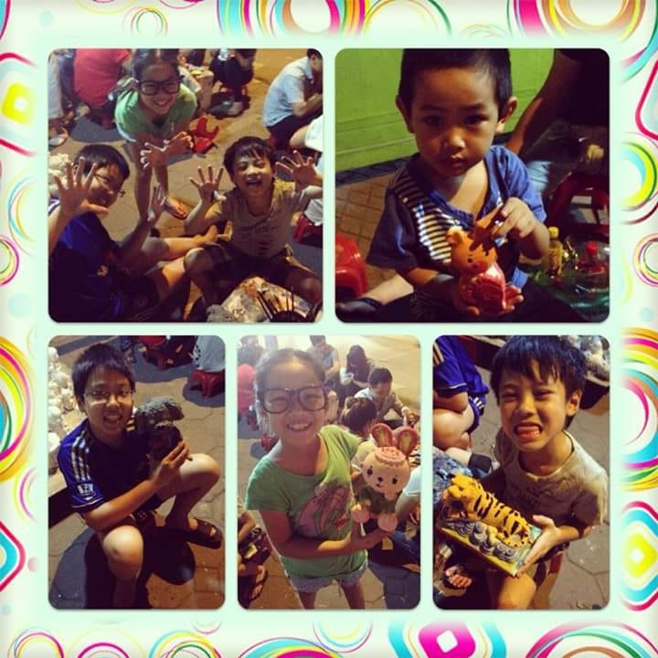

Introduce Myself
Lời Mở Đầu
Màu xanh dương là màu mà rất nhiều người yêu thích. Trong tự nhiên nó là màu của nước và bầu trời, và hiếm khi thấy trên các loại trái cây và rau củ.Hầu hết các tư liệu từ xưa đến nay đều đồng nhất màu xanh dương với ý nghĩa hòa bình và sự vững chắc, tin cậy. Một lý giải khá hợp lý cho điều này chính là bầu trời và đại dương. Màu xanh trong bao la của bầu trời cũng như sự tĩnh lặng khi nhìn từ xa của đại dương như những điều tồn tại bất biến, có thể khiến con người ta thư thái và phản ánh bản chất thật trong tâm hồn con người.

Giới Thiệu Bản Thân
Mình là Hoàng Trung Kiên, sinh ngày 6 tháng 1 năm 2001, đang là sinh viên của trường FPT Aptech. Sở
thích của mình là chơi game nghe nhạc xem phim và đặc biệt là xem các trận bóng đá. Ngoài ra mình còn rất thích các môn thể thao như đá bóng, cầu lông và chạy bộ ở Bách Thảo.
Mình là người rất yêu thích màu xanh biển, bởi vì đối với mình màu xanh biển là màu trong bao la của bầu trời cũng như sự tĩnh lặng khi nhìn từ xa của đại dương như những điều tồn tại bất biến, có thể khiến con người ta thư thái và phản ánh bản chất thật trong tâm hồn con người.
Lớp 12A6 THPT Nguyễn Trãi
Tôi bắt đầu vào học dưới mái trường Nguyễn Trãi năm 2016-2019, tôi có nhớ bố tôi nói rằng trong tất cả các năm học thì năm học cấp 3 chính là năm học tươi đẹp nhất của một đời học sinh. Và đúng thật,
sau khi bước lên ngôi trường đại học thì tôi chỉ muốn về lại cấp 3 nơi tôi những người bạn thân cho đến tận bây giời anh em vẫn chơi với nhau, vẫn đi giao lưu đá bóng. Trong một lớp học không thể thiếu GVCN, đó là cô Tạ Thúy Mai, cô là người mẹ thứ hai của bọn tôi trong suất năm cấp 3, cô luôn quan tâm và theo sát các học trò của mình, ai yếu điều gì mạnh điểm gì cô đều biết hết. Và từ những điều đó
cô đã cách thức trị những bọn bát nháo như chúng tôi hihi .... Cho đến tận bây giờ bọn tôi cứ có dịp là lại hẹn nhau về thăm trường, thăm người mẹ của mình
Những kỉ niệm ở thời cấp 3
Kỉ niệm hồi cấp 3 mà tôi đáng nhớ nhất đó là tạo một quả tên lửa nước, trong nhóm chúng tôi có những thành viên bao gồm Tiến Đức, Hữu Tùng, Minh Nhật và cả Đồng Đăng. Khi chúng tôi đã có nhóm mà nhóm thì phải có tên, nên anh em cùng nhau suy nghĩ nên đặt tên nhóm là gì, sau một khoảng thời gian ngắn ae chúng tôi quyết định đặt tên nhóm là Fantastic 5. Dù trong quá trình làm có gặp khó khăn nhưng ae không bỏ cuộc mà còn động viên nhau và cùng cố gắng giải quyết vấn đề, sau quá trình thì quả tên lửa nước cũng được hoàn thiện
Nhìn quả tên lửa do chúng tôi tạo ra mà có thể bay được lên trời ai nấy cũng vui vẻ và sau thành quả nỗ lực đó nhóm Fantastic 5 chúng tôi có một buổi kiểm tra hoàn toàn tốt (Nếu nhớ không nhầm nhóm chúng tôi được điểm cao nhất thì phải :)))) )
Kết
Hôm nay là ngày 27/1 và mai là ngày 28/1 tôi có thằng bạn cực kì thân và cũng cực kì ngu loz trong tình yêu, ae với nhau thôi thì tao chúc mày sinh nhật vui vẻ và bớt ngu đi nhé tk óc cặc